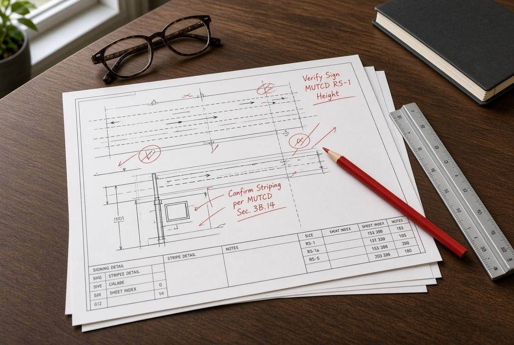
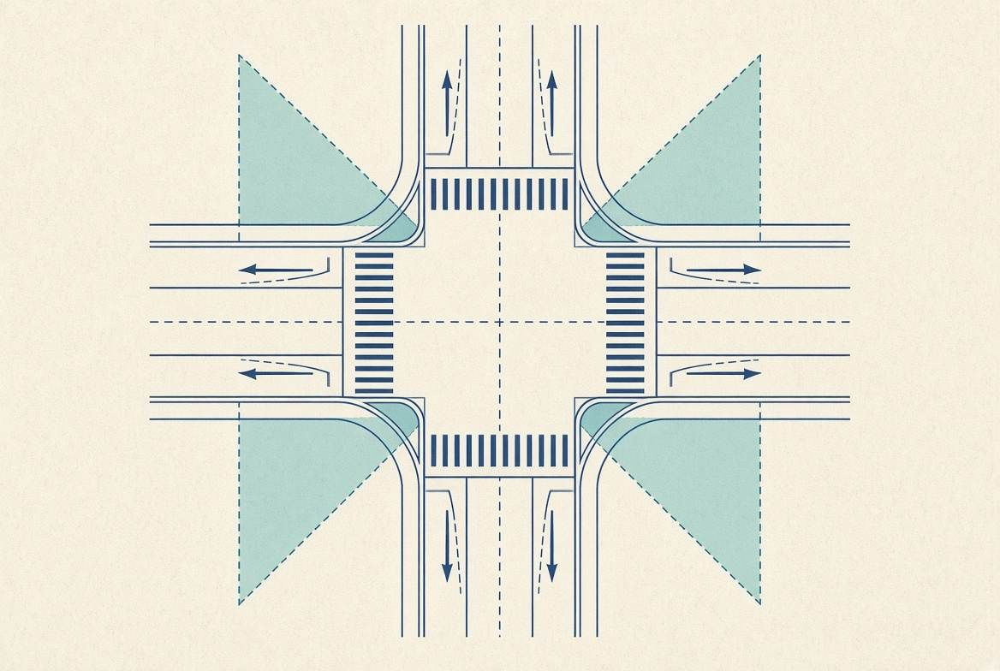
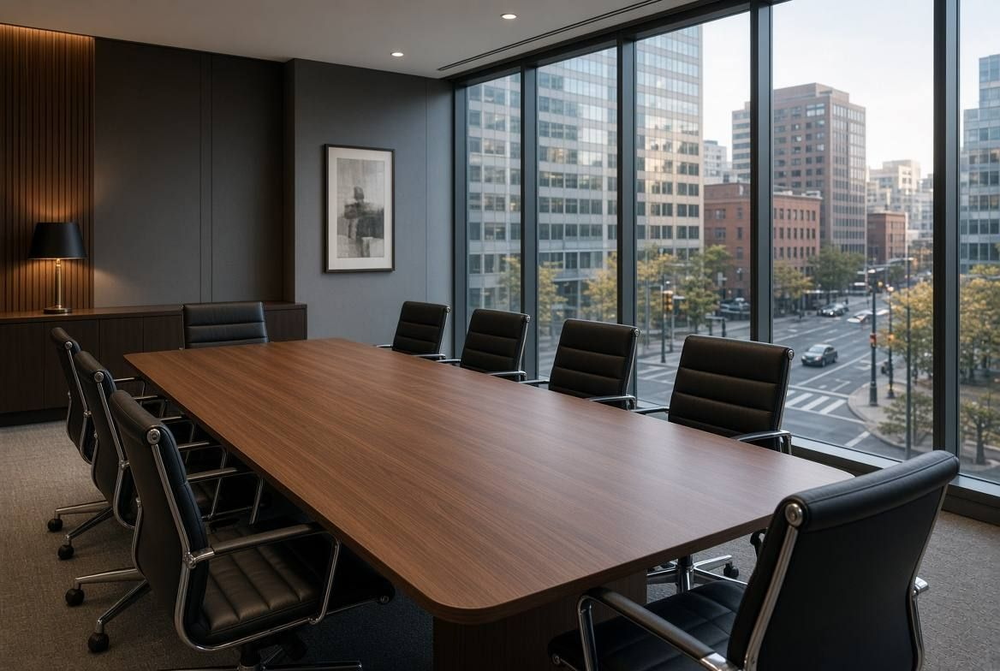
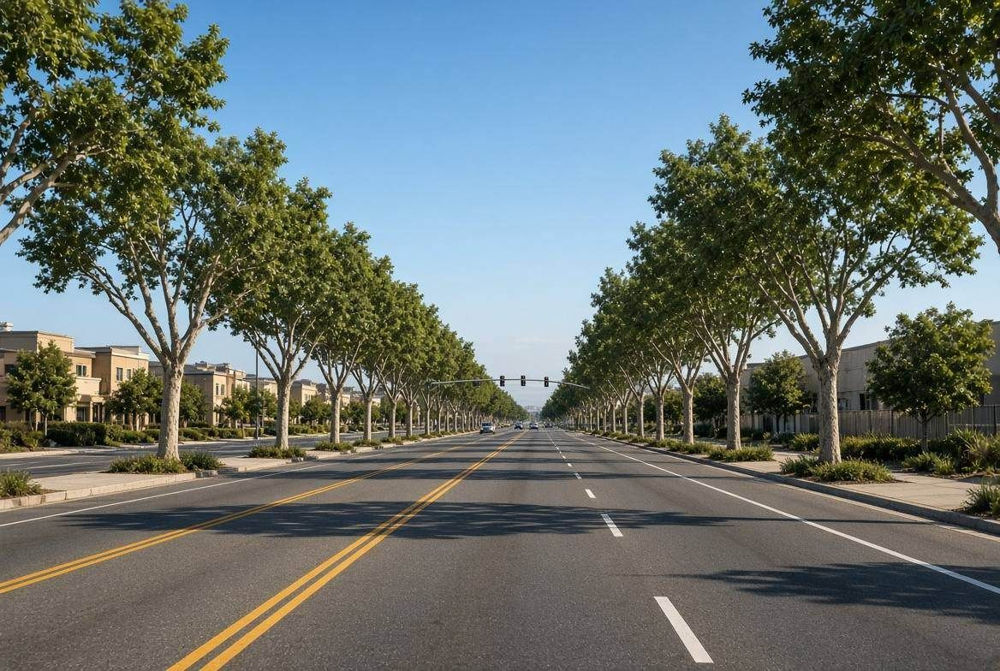
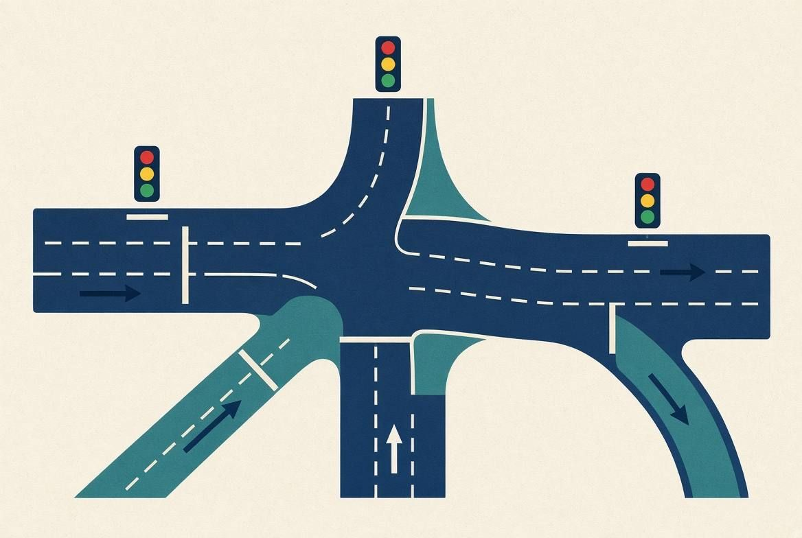
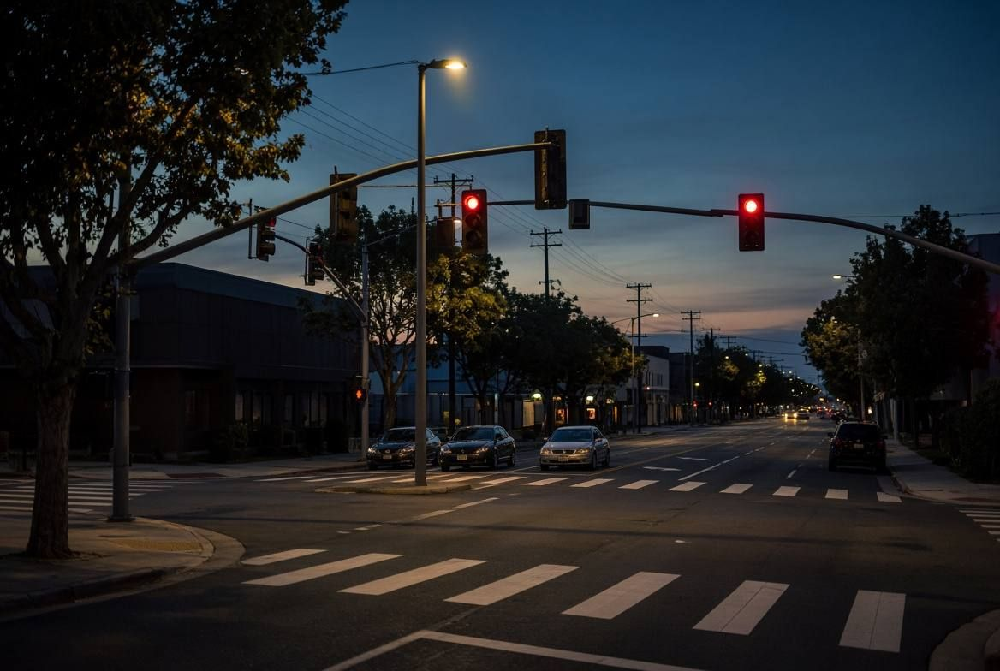

01 · Development
Development Review
Peer review of traffic impact studies, VMT analyses, access and circulation plans, parking studies, conditions of approval and improvement plans.


East Bay Mobility gives cities, counties and transportation agencies direct access to a senior traffic engineer for the reviews, decisions and second opinions where experience matters more than headcount.


Signals ran on electromechanical dials and timing plans worked out by hand. You learned a corridor by walking it.
Inductive loops and actuated control let signals respond to real traffic. The Americans with Disabilities Act reshaped every crosswalk and curb ramp.
Coordinated corridors, LED signal heads and pedestrian countdown signals spread across California streets.
Complete Streets and the California MUTCD put pedestrians, cyclists and transit on equal footing. SB 743 moved development review toward vehicle miles traveled.
Signals, fleets and data platforms now talk to each other in real time.
Vehicles that talk to signals and to each other. Automated driving. AI-assisted operations. Every one of them still has to meet the same standards of safety and judgment.
On-call engagements for the work that calls for professional judgment: reviewing, advising, deciding and documenting.
Peer review of traffic impact studies, VMT analyses, access and circulation plans, parking studies, conditions of approval and improvement plans.

Signing and striping plans, traffic control plans, sight distance, stop-control and warrant studies, safety evaluations and operational reviews.

A senior extension of your Public Works or Engineering team when you need traffic engineering capacity, or an experienced independent voice.

Controversial developments, unusual access conditions, resident safety concerns, intersection evaluations and second opinions on consultant recommendations.

Independent review of whether a roadway's design, signing, signals and traffic control met accepted practice. We work alongside reconstruction experts, not in place of them.

One senior engineer on every assignment. We keep each engagement focused, and in the hands of the person you hired.
Small and mid-sized agencies often need senior traffic engineering expertise for specific decisions, not a permanent position or a large consultant team.
Senior traffic engineering expertise your team may not have in-house, without adding a full-time position.
Defined scopes and not-to-exceed budgets, the way public agencies already contract for this work.
The person you speak with is the person who reviews, writes and signs. No hand-offs.
A clear, unbiased read on consultant studies, contested projects and resident concerns.
Grounded in the California MUTCD, Caltrans standards and documented engineering practice, written for council and the record.
Signal systems, emergency vehicle preemption, transit signal priority and connected-corridor programs.

Rafat Raie has spent more than forty years making California streets work, most of them on the public side of the counter.
He has served as City Traffic Engineer for communities across Northern and Southern California, including the City of Walnut Creek and the City of San Rafael, where he was Deputy Director of Public Works. In San Rafael he led a cloud-based emergency vehicle preemption program that connected 53 traffic signals with the city's emergency fleet. He went on to serve as a Principal at Advanced Mobility Group and led the Contra Costa Transportation Authority's first Digital Motions Master Plan.
Since 2001 he has taught practicing engineers through UC Berkeley's Technology Transfer Program, in courses from Fundamentals of Traffic Engineering to Traffic Signal Diagnostics and the California Traffic Engineer license review. He founded East Bay Mobility to bring that experience directly to the agencies that need it.
Tell us about the review, question or decision in front of you. Public agencies, private clients and legal teams are all welcome here.